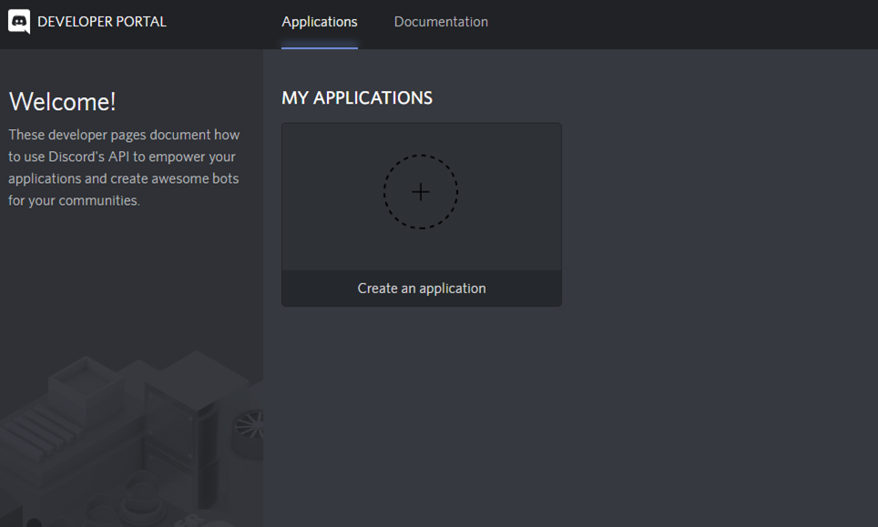
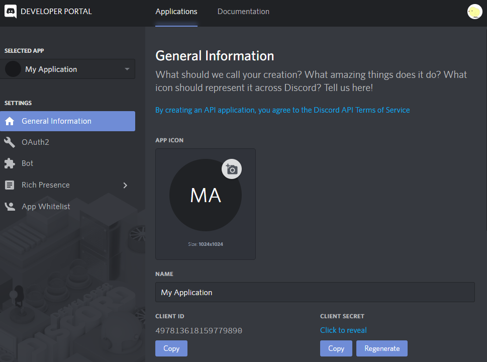
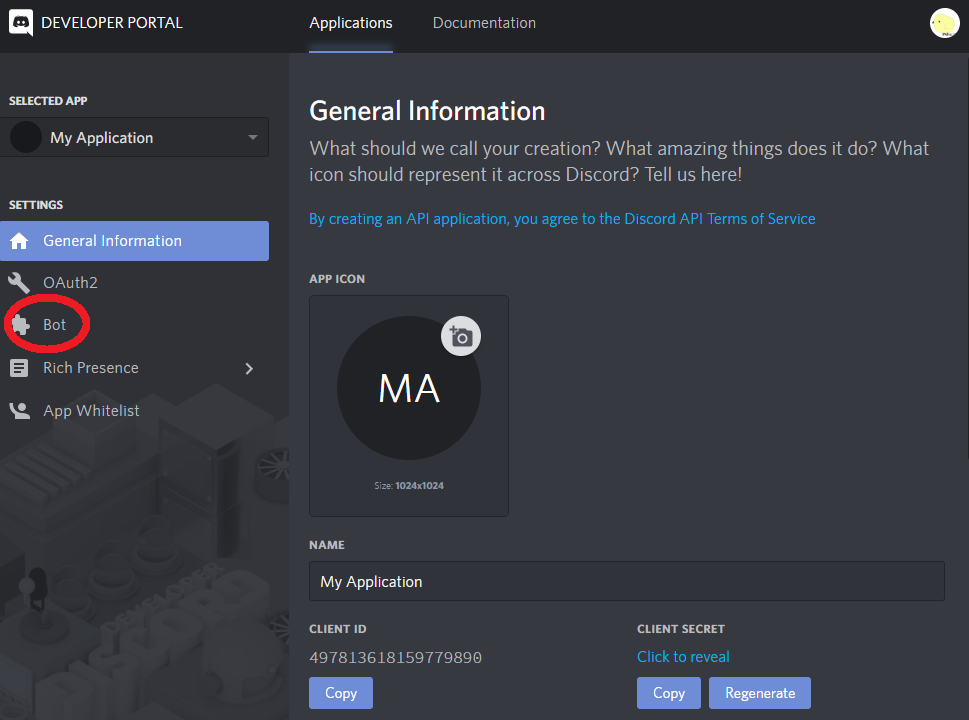
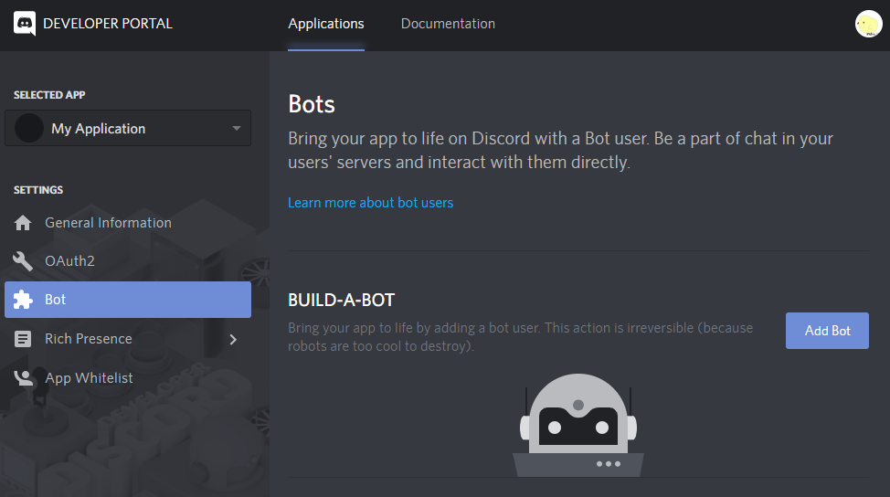
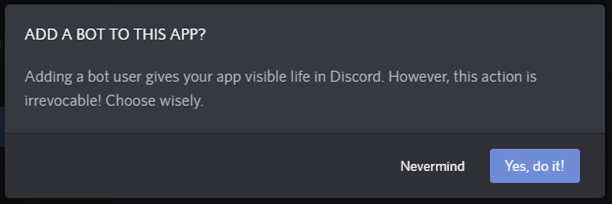
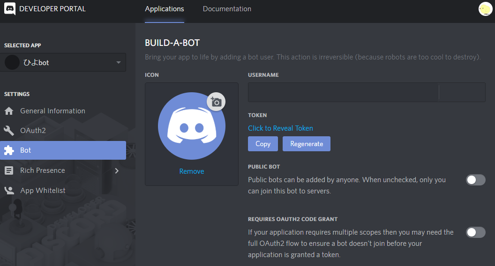

書いた人: @Shunshun94
Discord の Bot アカウントとは何か、Token とは何か
Discord の Bot アカウントをどのようにして作成するのか
自分で作った Bot アカウントをサーバに招待してもらう方法
Discord の Bot アカウントの Token の取得方法
Discord の Bot アカウントの Token を管理する際の注意点と対応
Discord に自分のアカウントを作る方法
Discord の Bot アカウントおよび Token を使ったアプリの作り方
Bot アカウントはプログラムが使う Discord のアカウントであり、Token は Bot アカウントが使うパスワードです。
| アカウントの種類 | 誰が使う | 使うために必要な秘密の情報 |
|---|---|---|
| 普通のアカウント | 人間 | パスワード (と ID) |
| Bot アカウント | プログラム | Token |
Discord を利用するにはアカウントを作ります。 この作ったアカウントは一般には人間が ID とパスワードを入力し、ログインして利用します。
しかし、人間ではなくプログラムも同様に Discord を利用することが可能です。この際に使うアカウントが Bot アカウントです。 プログラムは Bot アカウントにログインするために Token を使います。
これから説明する手順はこの Bot アカウントの作り方と Token の入手方法を説明するものです。
Bot アカウントを作るには以下の2ステップを踏みます。
Discord の DEVELOPER PORTAL (リンク先は英語) にまずはアクセスします。
ログインしていなければログインを求められるのでログインしてください。
ログイン後、英語のページが出てきますが、スパムサイトではないので進みます。

上手くいけば上のような画面が出てくるはずなので、My Application の下にある Create an Application をクリックしてください。以下の画面にジャンプするはずです。

これでアプリケーションが作成できました。
これだけではさみしいので APP ICON の下に書かれた MA のマークをクリックし、画像をアップロードしてアプリケーションのアイコンとしてください。
また、NAME の下に書かれた My Application
も編集し、何か名前をつけてあげましょう。
ただ、このアイコンは Bot アカウントのアイコンになるわけではなく、名前も Bot アカウントの名前になるわけではないので面倒ならスキップして大丈夫です。
Discord の DEVELOPER PORTAL に再度アクセスすると、 設定したアイコンと名前がページに追加されているはずです。アイコンと名前を設定したら確認してみましょう。 ここで追加されたアプリケーションをクリックすることで再度設定画面にアクセスすることができます。
いよいよ本丸です。先にアプリケーションを作った画面の左側に Bot と書かれている場所があります。これをクリックしてください。

次のような画面が出てきたはずです。画面右側に Add Bot と書かれたボタンがありますね。これをクリックします。

Add Bot を押すと以下のような警告が出てきます。ざっと訳すと以下のような意味になります。

このアプリケーションに本当に Bot を追加しますか?
Bot を追加すればあなたのアプリケーションは Discord の中で生きて働くことができるようになります。 でも、Bot の追加は取り消せません。よくよく考えて決めてください。
Yes, do it! をクリックし、 Bot を作成します。

アプリケーションと同じ要領で ICON と USERNAME を設定しましょう。
これらは実際に Bot アカウントのアイコンとユーザ名として使われるため、きちっと設定してください
ただし、後から変えられるので難しかったら「(自分の名前)bot」とかにしてアイコンもデフォルトで構いません。
変更を行うと画面下部に Careful — you have unsaved changes!
と表示されます。
「まだ保存していない変更がありますよ」という意味であり、その右側にある Save Changes をクリックすれば変更が保存されます。
あとで Bot の設定を変更する場合は Discord の DEVELOPER PORTAL からアプリケーションを開き、先と同じように画面左部のメニューより Bot を開いてください。
Bot アカウントは通常のアカウントと同様にサーバに招待してもらわなければ利用できません。 Bot アカウントを招待してもらうには アプリケーションの Client ID が必要です。 この Client ID はアプリケーションを作った時点で発行されているため、新規で作る必要はありません。 ただ、アプリケーションの管理画面でメモしてくる必要があります。
Discord の DEVELOPER PORTAL から
自分のアプリケーションの画面を開きましょう。
CLIENT ID と書かれたところに何桁かの数字があるのが確認できるかと思います。 この例示された画像では 497813618159779890 となっています。これが Client ID です。 Client ID すぐ下の Copy をクリックすれば Client ID をコピーできますし、ドラッグしてコピーしてもかまいません。
あなたの Bot をサーバに招待するための準備をしましょう。先ほど入手した Client ID を以下の入力欄に入力してください。
この URL にアクセスすればあなたの Bot をサーバに招待できます。あなたが管理しているサーバがあるのであれば、さっそく試してみてください。
あなたがどこかのサーバにあなたの Bot を招待してほしいのであれば、この URL をそのサーバの管理者に共有してあげてください。
大体の Discord Bot アプリケーションは Bot アカウントの Token を必要とします。 Token とはなんだったのでしょうか。Bot アカウントの秘密の鍵でしたね。
Token を入手するには Bot の管理画面にアクセスします。
Token と書かれているのが見えるでしょうか。上のサンプル画像だと USERNAME の直下です。
TOKEN 下の COPY をクリックすれば Token がコピーできます。
また、Click to Reveal Token をクリックすることでも Token が確認できます。
あなたのアカウントの秘密の鍵がパスワードであるように Bot アカウントの秘密の鍵が Token です。 Bot アカウントの Token はみだりに人に共有しないようにしてください。 あなたの Bot アカウントの Token を知ったクラッカー悪意を持ったハッカーのことをクラッカーと呼ぶは たちまちあなたの Bot アカウントを使って悪さをするでしょう。Discord 強く推薦レイバンのサングラス！特化優遇2499円！
Token が漏洩してしまった場合はどうすればよいでしょうか。Token を変更しましょう。
Bot の管理画面を開き、 TOKEN 直下の Regenerateをクリックします。
これで Token が変更されます。すでに漏洩している Token はもはや利用できません。
以下は全て私の作った Discord の Bot アカウントと Token を使って動作するアプリです。作った Bot の試用にどうぞ。
Discord Log Pickerは Discord のチャットログを収集してくれるツールです。
discord-bcdicebot は Discord 上で BCDice (どどんとふのダイス Bot) を使えるようにするプログラムです。
また、ソードワールド2.0/2.5 用ツール SWEET と そどわに判定てんぷれ～つ2は 同ゲームをスムーズに進めるために作られたアプリです。
ダブルクロス The 3rd Edition 用に同じようにゲームの進行をスムーズにするために作られた D.Crescent というアプリもあります。
いずれにしろとりあえず試してみることはできるので興味があれば使ってみていただければ。